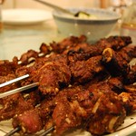

Home
Beef Suya

Description
Beef suya is a popular Nigerian street food made with thin slices of beef coated in
spicy suya (yaji) seasoning and grilled or pan-fried. It's smoky, spicy, and perfect as
a quick snack or light meal.
Ingredients
- Beef (thinly sliced)
- Suya spice (yaji)
- Paprika (optional)
- Salt (small amount)
- Vegetable oil
- Onion (sliced, for serving)
- Tomatoes (optional, for serving)
Steps
- Slice beef thinly and place in a bowl.
- Add suya spice, paprika, salt, and a little oil; mix well.
- Thread onto skewers or cook directly in a hot pan.
- Grill or pan-fry until browned and slightly crispy.
- Serve hot with sliced onions and tomatoes.